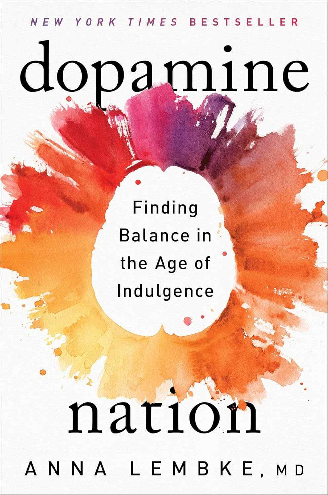

"Dopamine Nation: Finding Balance in the Age of Indulgence"
- Read on 2025-11-15
- Rating: ️️️️️
- Format: 🎧 (6 hours 11 minutes)
I liked a few aspects of this book, and thoroughly disliked one aspect of this book. Like #1: a chapter on "The Pleasure-Pain Balance" was interesting, and made sense to me. Like a see-saw, our bodies naturally produce dopamine when we endure some types of pain. As a society, we have shortcut that process and simply adapted to the dopamine hits through various activities. Then, we're dissatisfied with the naturally responding pain we feel as a consequence. Like #2: her acronym and process for getting the balance right again - each point discussed in her book: Data, Objectives, Problems, Abstinence, Mindfulness, Insight, Next steps, Experiment. I think I like the "Objectives" point the most - What does this (potentially bad) habit do for you? Why do you do this? Like #3: the chapter on "Radical Honesty". Honesty has been on my mind a lot lately. This is directly from her book:
Telling the truth about things large and small, especially when doing so exposes our foibles and entails consequences—is essential not just to recovery from addiction but for all of us trying to live a more balanced life in our reward-saturated ecosystem. It works on many levels. First, radical honesty promotes awareness of our actions. Second, it fosters intimate human connections. Third, it leads to a truthful autobiography, which holds us accountable not just to our present but also to our future selves. Further, telling the truth is contagious, and might even prevent the development of future addiction.
I could have read a whole book about this subject. There was more I liked from the book, but those are my main positive takeaways.
What I thoroughly disliked was the frequently revisited and overly descriptive details of one man's all-consuming obsession with masturbation. The topic isn't surprising in a book like this, but the approach felt unnecessary. Had I not been obligated to read the book for a book club I run, I would have stopped. I feel the detail not only significantly detracts from the point of the book, but also diminishes the overall quality of the book. I wish I could erase these unnecessary details from my mind.
- Prior: The Color Purple
- Next: The Book of Mormon